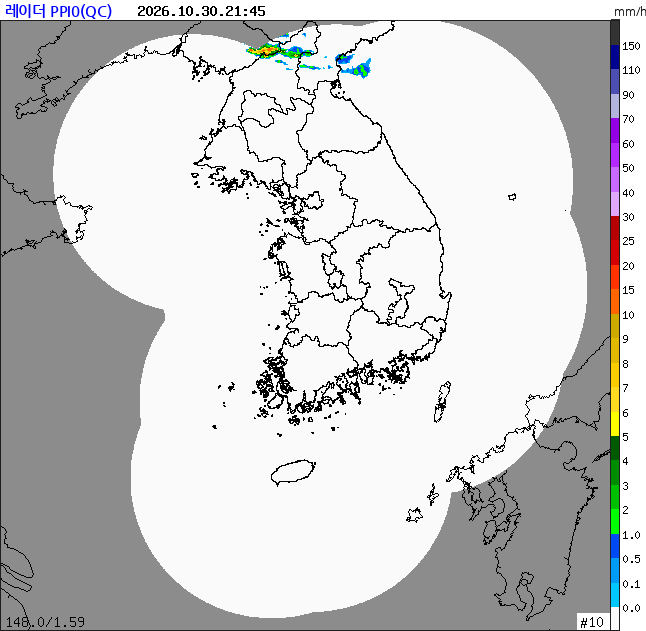

{{updatedTxt}} 기준
{{demoText}}
실제 상황이 아닙니다. 끄려면 상단 '■ 시연 종료'.
{{typhoonBody}}
공식특보
{{warnText}}
{{obsTag}}
{{obsText}}
{{obsSub}}
{{noteTxt}}
관서별 {{rankTitle}}
{{rankSrcTxt}}
{{t.label}}
{{r.name}}
{{r.valTxt}}
{{rankEmptyTxt}}
{{c1Title}}
{{c1Sub}}
{{c1Body}}
{{c2Title}}
{{c2Sub}}
{{c2Body}}
{{c3Title}}
{{c3Sub}}
{{c3Body}}
{{f24Title}}
{{myStation}} · 앞으로 24시간
옆으로 밀어서 보기 →
하천 수위
{{riverSub}}
{{riverBody}}
충북 특보 발효현황
{{warnImgAge}}
지금 충청북도에 발효 중인 특보 구역입니다. 그림을 누르면 날씨누리 충북 특보 통보문이 열립니다.
{{radarTitle}}
{{radarAge}}
{{radarDesc}}

{{legendBody}}
기상청 해설
{{infoTs}}
{{infoBody}}
재난문자
{{msgBody}}
{{footA}} · {{updatedTxt}} 기준
{{footB}}
{{footB}}